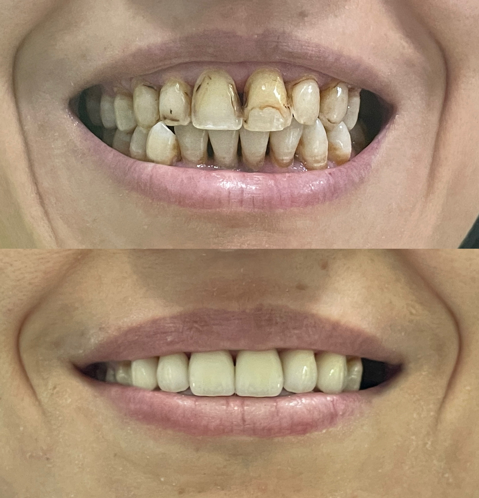
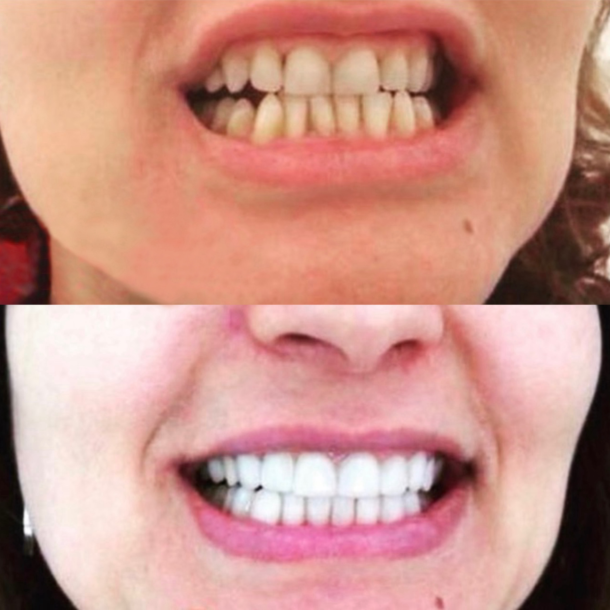
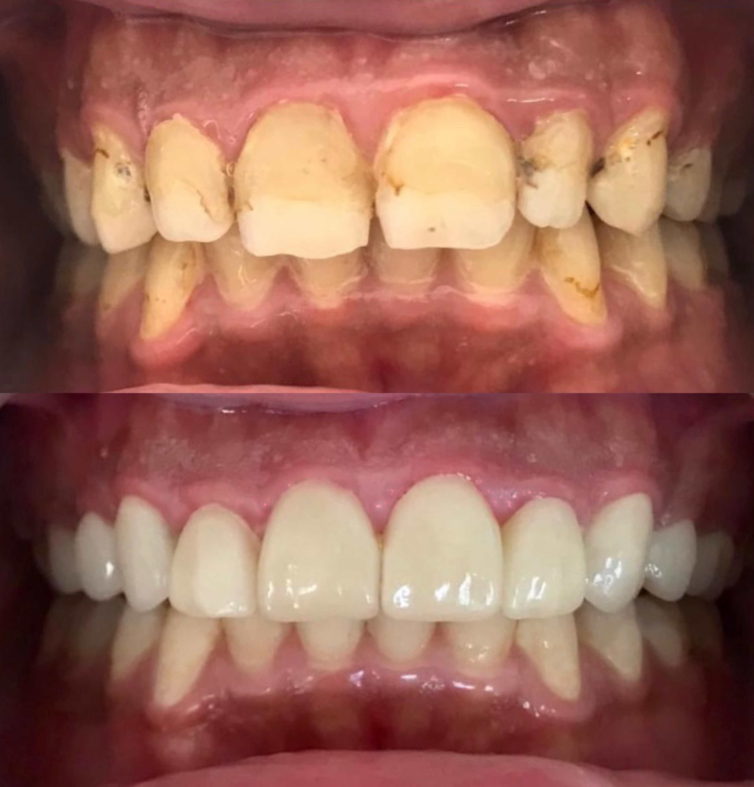
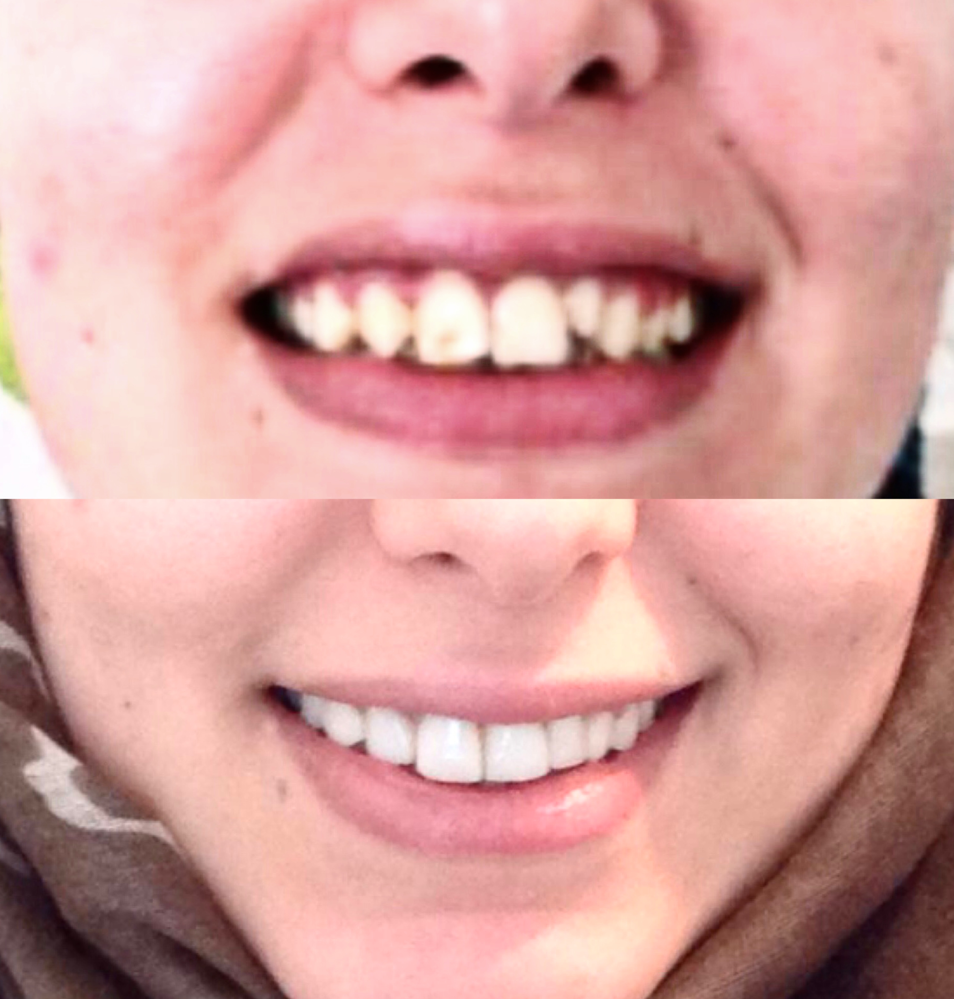
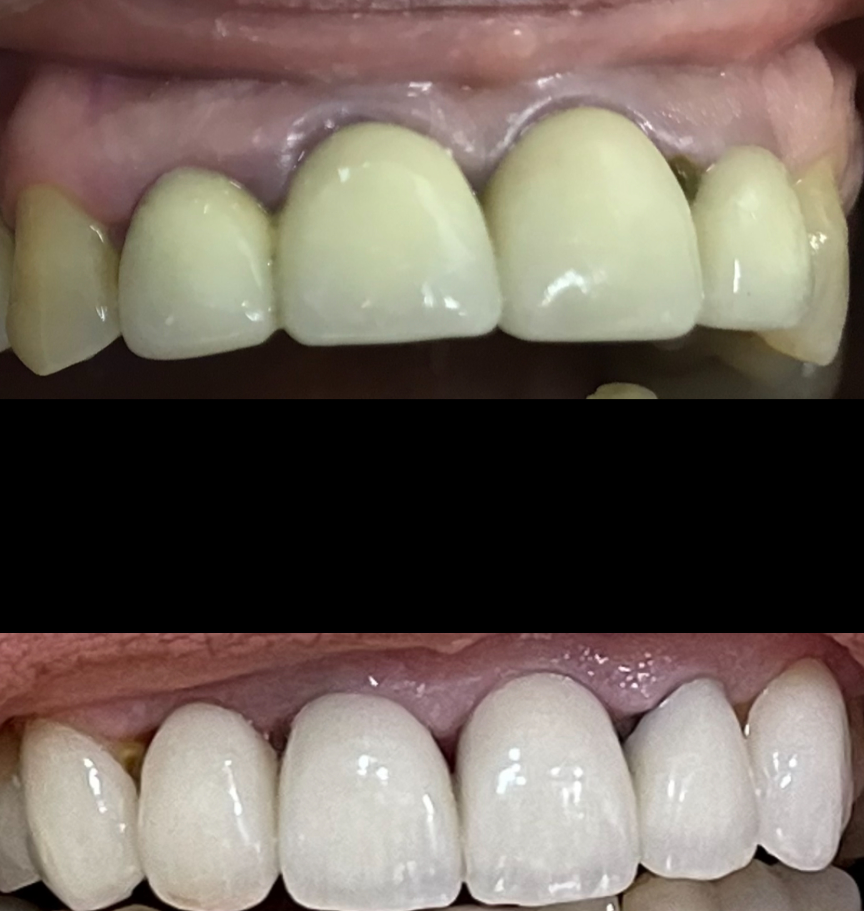
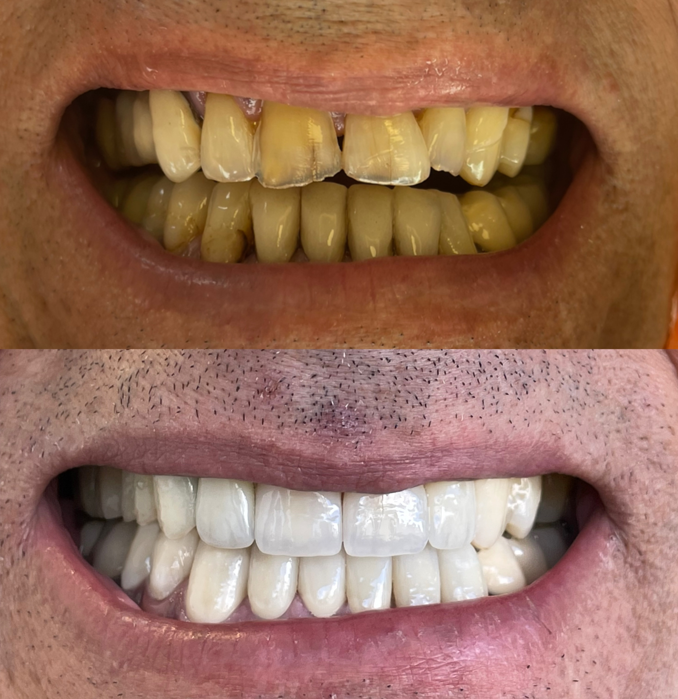
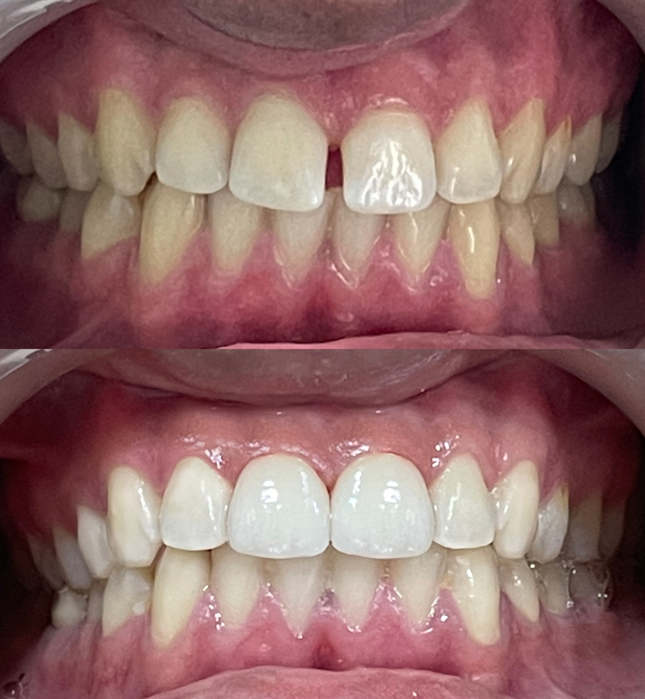
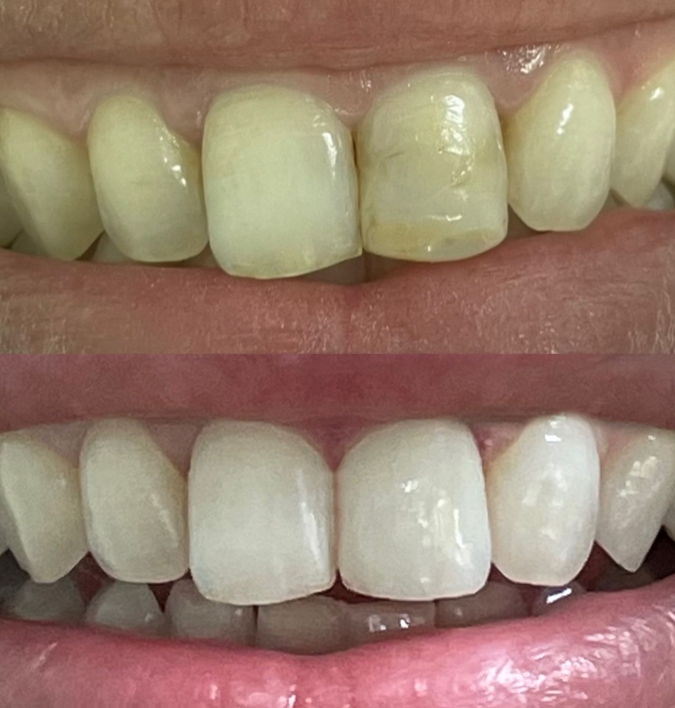
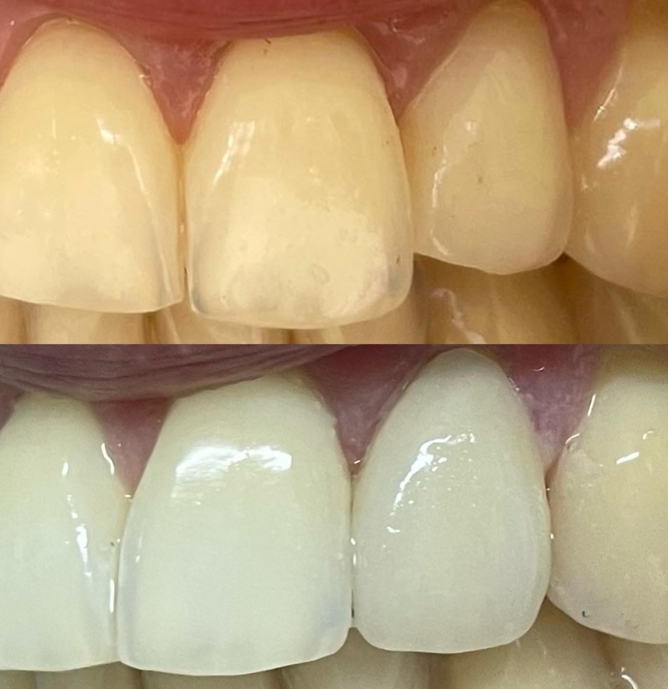

Facettes Dentaires & Hollywood Smile à Rabat
Dents tachées, usées, légèrement décalées ou espacées ? Les facettes en céramique transforment un sourire en quelques séances seulement. Un résultat naturel, dessiné avec vous avant même la première pose.
- 20 ans d'expérience
- Simulation avant traitement
- Céramique haut de gamme
- Résultat en quelques séances
Qu'est-ce qu'une facette dentaire ?
Une facette dentaire est une fine pellicule de céramique, d'environ 0,3 à 0,7 mm d'épaisseur, collée sur la face visible de la dent. Elle en recouvre les défauts et redessine sa forme, sa teinte et son alignement apparent. C'est aujourd'hui la technique la plus efficace pour transformer un sourire sans passer par un traitement long.
Les facettes corrigent une large gamme de situations : dents tachées ou dévitalisées que le blanchiment n'éclaircit plus, dents usées ou ébréchées, espaces entre les dents (diastèmes), petites malpositions ne justifiant pas une orthodontie complète, ou encore dents jugées trop petites ou de forme irrégulière.
Le Hollywood Smile désigne une transformation esthétique globale du sourire : on ne traite plus une dent isolée mais l'ensemble des dents visibles — généralement 8 en haut, parfois 8 en haut et 8 en bas. La teinte, la forme, les proportions et l'alignement sont repensés en harmonie avec votre visage, votre âge et vos attentes. C'est un travail de design du sourire autant que de dentisterie.
Nous distinguons deux matériaux. Les facettes en céramique sont fabriquées en laboratoire sur mesure : elles offrent une translucidité très proche de l'émail naturel, résistent remarquablement aux taches et durent 10 à 15 ans, voire davantage. Les facettes en composite sont sculptées directement en bouche en une seule séance : moins coûteuses et immédiatement réalisables, elles sont en revanche plus sensibles aux colorations et à l'usure, avec une durée de vie de 4 à 7 ans.
Avant toute pose, nous réalisons une simulation. Empreinte numérique, photographies et projet esthétique vous permettent de visualiser votre futur sourire avant que la moindre dent ne soit touchée. Vous validez la forme et la teinte en amont : rien n'est laissé à l'interprétation. C'est cette étape qui fait la différence entre un sourire « refait » et un sourire naturel qui vous ressemble.
Ce que les facettes permettent de corriger
- Les colorations tenaces qu'aucun blanchiment ne parvient à éclaircir
- Les espaces entre les dents refermés sans orthodontie
- Les dents usées ou ébréchées restaurées dans leur forme d'origine
- Les petites malpositions corrigées visuellement en quelques séances
- Une teinte homogène et durable sur l'ensemble du sourire
- Un résultat sur mesure, validé par vous avant la pose
Comment ça se passe ?
-
Consultation & projet esthétique (200 Dhs)
Analyse de votre sourire, photographies, empreintes numériques. Nous définissons ensemble la teinte et la forme souhaitées. Devis remis le jour même.
-
Simulation du résultat
Vous visualisez votre futur sourire avant toute intervention et validez le projet. Des ajustements sont possibles à ce stade.
-
Préparation des dents
Une réduction minimale de l'émail (souvent moins d'un demi-millimètre) est réalisée, puis l'empreinte définitive est prise. Des facettes provisoires sont posées.
-
Pose des facettes définitives
Essayage, vérification de la teinte et de l'occlusion, puis collage définitif. Votre nouveau sourire est en place.
-
Contrôle et suivi
Un rendez-vous de contrôle vérifie l'adaptation, suivi de vos détartrages habituels.
Tarifs
Tarifs facettes et Hollywood Smile à Rabat
Des tarifs dégressifs par lot. Le devis précis vous est remis lors de la consultation.
-
Facette céramique — à l'unité
4 000 Dhs
par facette
Idéal pour corriger une ou quelques dents : dent tachée, ébréchée ou légèrement décalée.
-
Le plus demandé
Hollywood Smile — 8 facettes
30 000 Dhs
arcade supérieure uniquement
La transformation la plus demandée : les 8 dents visibles du haut entièrement redessinées.
-
Hollywood Smile — 16 facettes
55 000 Dhs
8 en haut + 8 en bas
Le sourire complet, haut et bas en harmonie. Le résultat le plus abouti.
-
Facettes composite
Sur devis
réalisées en une séance
Sculptées directement en bouche : plus accessibles et immédiates, à renouveler plus souvent.
-
Consultation & simulation
200 Dhs
projet esthétique inclus
Analyse du sourire, photos, empreintes et devis chiffré remis le jour même.
Tarifs indicatifs, susceptibles d'évoluer à la hausse comme à la baisse selon la complexité de votre cas. La consultation coûte 200 Dhs et votre devis personnalisé y est établi et remis. Des facilités de paiement sont possibles.
Nos Avant-Après
Résultats avant / après
Des transformations par facettes réalisées au cabinet du Dr Khamlich.









FAQ
Questions fréquentes
-
La céramique est fabriquée sur mesure en laboratoire : elle reproduit la translucidité de l'émail naturel, résiste très bien aux taches (café, thé, tabac) et dure 10 à 15 ans, souvent davantage. Le composite est sculpté directement en bouche par le praticien en une seule séance : c'est plus rapide et plus économique, mais le matériau se colore et s'use plus vite, avec une durée de vie de 4 à 7 ans. Pour un Hollywood Smile durable, la céramique est le choix de référence.
-
Une préparation minimale est nécessaire pour que la facette s'intègre sans donner un aspect épais ou artificiel. On parle généralement de 0,3 à 0,7 mm d'émail, soit l'épaisseur de la facette elle-même — la dent reste vivante et l'essentiel de sa structure est conservé. Dans certains cas favorables, notamment quand les dents sont petites ou en retrait, une pose sans préparation est envisageable. Le Dr Khamlich vous précise ce qui s'applique à votre cas lors de la consultation.
-
Pour des facettes en céramique, comptez généralement 3 rendez-vous répartis sur 2 à 3 semaines : la consultation avec projet esthétique, la séance de préparation et d'empreinte avec pose de provisoires, puis la pose définitive. Pour des facettes en composite, une seule séance suffit, car elles sont sculptées directement en bouche.
-
Une facette en céramique dure en moyenne 10 à 15 ans, et bien souvent davantage lorsque l'hygiène est rigoureuse. Le composite tient plutôt 4 à 7 ans. Les facteurs qui réduisent cette durée sont le bruxisme (grincement des dents), le fait de croquer des aliments très durs et le tabac. Si vous grincez des dents, une gouttière de nuit vous sera recommandée pour protéger votre investissement.
-
Pas systématiquement. Les facettes conviennent parfaitement aux dents visibles et globalement saines. En revanche, une dent très délabrée, fortement cariée ou dévitalisée est mieux protégée par une couronne, qui l'entoure complètement. De même, une malposition importante relève de l'orthodontie plutôt que des facettes, ou d'une combinaison des deux. Une gencive malade doit également être traitée en amont. Le bilan initial permet de déterminer la solution la plus juste pour chaque dent.
-
C'est précisément l'objectif, et cela dépend entièrement du travail réalisé en amont. Une céramique de qualité reproduit la translucidité de l'émail, et la forme comme la teinte sont choisies en harmonie avec votre visage, votre âge et votre teint. C'est aussi la raison d'être de la simulation : vous voyez et validez le projet avant la pose. Si vous souhaitez un résultat très blanc et très uniforme, c'est possible ; si vous préférez quelque chose de discret, c'est possible aussi — c'est votre choix, pas le nôtre.
-
C'est rare, mais cela peut arriver. Un décollement se recolle en une séance courte. Une fracture nécessite en revanche le remplacement de la facette concernée. Les causes les plus fréquentes sont le bruxisme non traité, un choc, ou l'habitude de croquer des objets durs (glaçons, stylos, ongles). Le port d'une gouttière de nuit chez les patients qui serrent les dents réduit considérablement ce risque.
-
Non : la céramique et le composite ne réagissent pas aux produits de blanchiment. C'est pourquoi l'ordre des étapes est important. Si vous souhaitez éclaircir votre sourire, le blanchiment se fait toujours avant la pose des facettes, afin que celles-ci soient fabriquées dans la teinte finale souhaitée. C'est un point que nous abordons systématiquement lors du projet esthétique.
Réservation en ligne
Prendre rendez-vous pour vos facettes
Réservez directement en ligne, sans quitter le site.
Un souci avec le formulaire ? Appelez-nous directement au 06 11 38 11 11.
Nous trouver
Clinique Dentaire Arribat — Rabat Agdal
2 Rue Oued Souss, Agdal, Rabat — Ouvrir dans Google Maps →
Infos pratiques
-
Adresse
2 Rue Oued Souss, Agdal, Rabat, Maroc -
Téléphone
+212 6 11 38 11 11 -
Horaires
Lundi – Vendredi : 9h00 – 18h00
Samedi : 9h00 – 13h00 -
Itinéraire
Obtenir l'itinéraire -
WhatsApp
Nous écrire sur WhatsApp